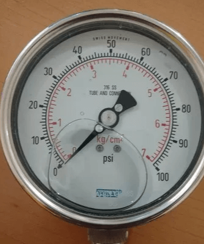
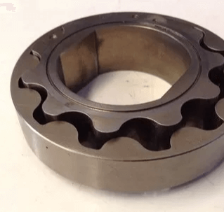
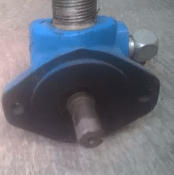
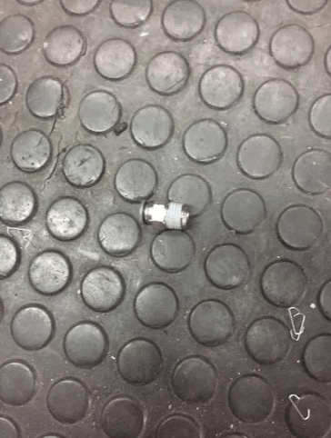

-
Aceites.
Los aceites para la lubricación de los motores suelen ser minerales, los cuales se obtienen de la destilación del petróleo crudo de ellos derivan los sintéticos los cuales cumplen mejor con requerimientos específicos del fabricante.
Las características de un buen aceite deberían ser:
Resistencia al calor.
A muy altas presiones.
Anticorrosión.
Antioxidante.
Deferencia.
Antiespumante.
En el mercado podemos encontrar aceites de varios tipos.Normal.
Premium.
Detergente.
Multigrado.
Lo recomendable suele ser utilizar multigrados puesto que resistirán condiciones con temperaturas variantes.
En el caso de que se adquiera un aceite mineral el cual tiene menos características y es mucho más barato, se suelen agregar aditivos para aumentar más propiedades cosa que en los sintéticos no es necesario. Los lugares donde es vital que haya lubricación son:
Paredes del cilindro y del pistón.
Pie de la biela.
Bancadas del cigüeñal.
Árbol de levas.
Eje de balancines.
Engranes en la distribución.
-
Presión de lubricante.
Es la presión con la que circula desde la bomba un lubricante a diversos puntos de importancia para lubricar.
La presión debe ser muy adecuada para que llegue a los puntos que en verdad son requeridos, pero no tan fuerte para que no lubrique zonas en las que no requiere y poder hace el consumo de este mucho menor.
La única manera en que podemos medir la presión de nuestro sistema de engrase es poniendo un manómetro que se une a la tubería de la bomba en donde la presión se encuentra.
-
Bombas.
El aceite es impulsado por bombas en los sistemas de presión, dentro de las cuales tenemos tres tipos de bombas.
Con engranajes.
Con paletas.
Con embolo.
Bomba con engranes
Este esta integrado por dos ruedas dentadas y encerradas en un Carter, de las cuales una de ellas gana todo el movimiento y lo transmite a la otra, haciendo pasar el aceite entre ellas y las paredes del mismo Carter en el que se encuentra encerrada.

Bomba de paletas
Esta tiene un Carter dentro del cual gira una excéntrica, la cual arrastra dos paletas a las que un resorte mantiene unida a la pared por sus extremos.

Bomba de embolo
En esta sube un pistón y una valvulilla permite el llenado del cilindro, al momento de que baja el pistón este se cierra y el aceite sale a presión por conductos. -
Valvula reguladora.
La bomba de engrase recibe el movimiento del árbol de levas y su velocidad de funcionamiento en función de la velocidad de giro del motor.
Si el motor gira deprisa la bomba también, pudiendo producir una excesiva presión en el sistema de engrase, lo cual no sería conveniente.
Para evitarlo se instala a la salida de la bomba de engrase una válvula reguladora o de descarga, su misión es mantener la presión adecuada a las necesidades del motor.
Si la bomba de engrase manda una excesiva cantidad de aceite al sistema de engrase, la válvula reguladora se abre y el aceite sobrante vuelve al cárter y, una vez establecida la presión deseada, se cierra.
-
Filtrado.
El aceite, después de engrasar los diferentes elementos del motor, puede arrastrar impurezas que deben ser eliminadas antes de que vuelva a engrasar otra vez los elementos del motor, para ello se recurre a su filtrado.
El aceite se filtra antes de llegar a la bomba de engrase para que, una vez ésta lo mande a los distintos elementos y antes de llegar a ellos, pase por otro filtro constituido por una material textil poroso, donde quedan retenidas las impurezas.
Este filtro hay que cambiarlo cada cierto tiempo, pues las partículas en él depositadas pueden llegar a obstruirlo, lo cual hace que el aceite pase directamente a los elementos a engrasar lleno de impurezas.
-
Cambio de aceite.
La ventilación del cárter y el filtrado no basta para impedir que poco a poco se vaya estropeando el aceite por lo que llegado el momento es necesario su cambio.
Este cambio debe hacerse a los 3.000 kilómetros normalmente en invierno y a los 1.500 en verano o según las normas del fabricante, tipo de aceite o tipo de vehículo.
En la actúalidad existen aceites que, con los modernos sistemas de filtrado, permiten espaciar las renovaciones o cambios entre los 5.000, los 10.000 e incluso los 30.000 kilómetros.